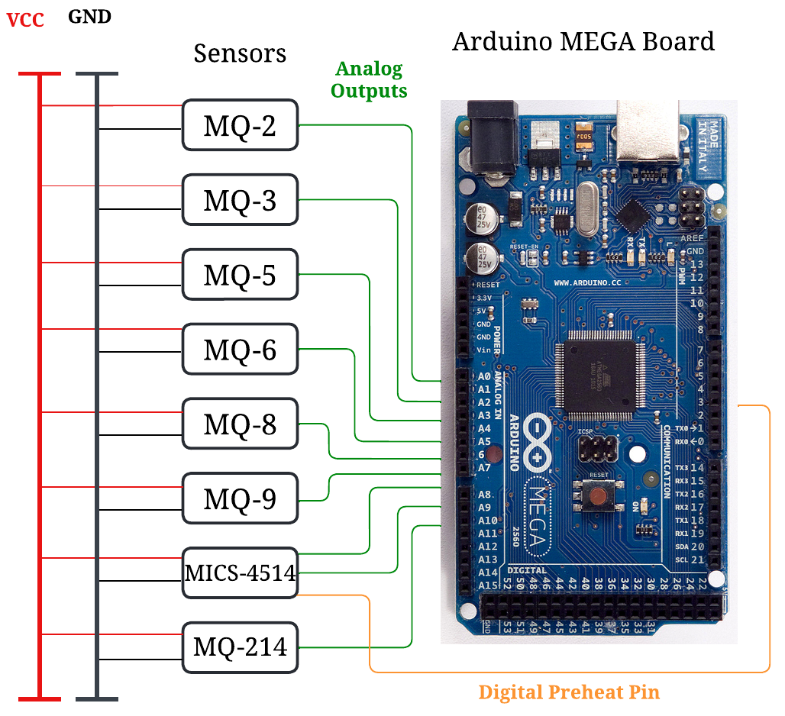
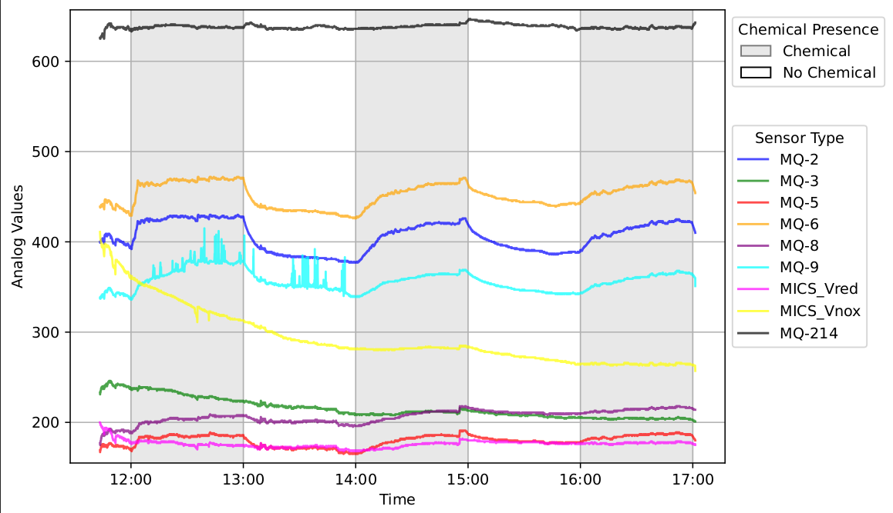

Molecular Communications
Traditionally, data communication relies on electromagnetic waves, such as WiFi, Bluetooth, Cellular Networks, etc. However, under certain application requirements, electromagnetic waves are not the ideal medium for data communication. Instead, research community is actively searching for alternative data communication technologies. Molecular Communication (MC) is such a novel approach where chemical molecules that propagate through the atmosphere (either guided or unguided) are used to carry data bits. When building MCs, various chemical compounds, such as alcohols, can be used. In this research direction, we are interested in implementing MCs to achieve covert and secure communictions for specialised application scenarios.
 